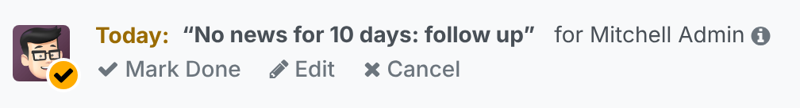
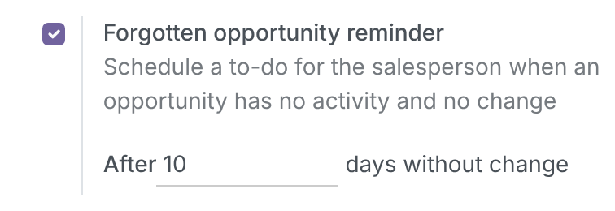

Free module for Odoo 17 · CRM
For sales teams who lose deals because an opportunity was simply forgotten in the pipeline.
9 automated tests on Odoo 17 Community · screenshots from the Odoo 18 version · English and French · LGPL-3
By Alexandre Gabriel, independent Odoo developer. Need it adapted to your company? See below.

The to-do that Odoo schedules on a forgotten opportunity, for its salesperson. Demo data, shown in the Odoo 18 version.
1. Odoo checks the pipeline once a day.
It looks at open opportunities that have a salesperson and no planned activity.
2. A forgotten opportunity gets a to-do.
If nothing changed on it and nothing was written in its chatter for the number of days you chose, Odoo schedules the to-do No news for 10 days: follow up for the salesperson.
3. The salesperson follows up.
Once the to-do is done, the opportunity gets no new one until it has been silent again for the same number of days.
Where: CRM › Configuration › Settings › Forgotten opportunity reminder
| Setting | What it does | Default |
|---|---|---|
| Forgotten opportunity reminder | Switches the to-dos on or off. | On |
| After … days without change | Days of silence before the to-do is created. | 10 |

The setting, in CRM. Demo data, shown in the Odoo 18 version.
| Tested on | Odoo 17 Community. Developed and tested with 9 automated tests for this module, 171 for the whole suite of 18 modules. |
|---|---|
| Screenshots | Taken in the Odoo 18 version of this module. The screens of the Odoo 17 version were not checked one by one in a browser. |
| Not tested on | Odoo Enterprise. |
| Odoo 18 | An 18.0 version exists on its own branch. |
| Needs | The Odoo app CRM. |
| Languages | English and French. No German translation. |
| Licence | LGPL-3. Free. |
I adapt it to the way you work, or build the small Odoo feature you are missing.
Fixed price announced before I start, paid on delivery.
Describe your need in 2 lines, fixed price within 24 h
Alexandre Gabriel, independent Odoo developer in Lausanne
alexandre@alexandregabriel.ch · alexandregabriel.ch
En français : décrivez votre besoin en deux lignes, je vous réponds avec un prix fixe sous 24 h.